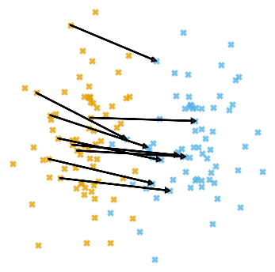
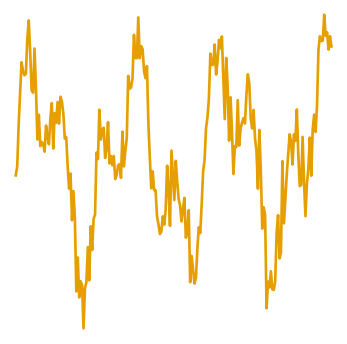

Kshiteej Sheth


Introduction
I am a final year CS PhD student at EPFL working with Michael Kapralov. I am broadly interested in LLM inference and fine-tuning optimization with recent works on fast attention, KV cache compression and data-selection for LLM fine tuning. In the past I have also worked on fast algorithms for large-scale & high-dimensional data analysis and numerical linear algebra.
Experience
- Student Researcher, Google Research (October 2025-Present): Working on various projects on LLM inference optimization and data selection for LLM finetuning.
- Applied Science Intern, Amazon Research (July 2024-Jan 2025): Deployed ML and optimization solutions to production on AWS infrastructure for internal customers.
- Research Assistant (January 2017-August 2018): Worked with Anirban Dasgupta and Dinesh Garg (IBM Research, Bengaluru) on randomized linear algebra.
- Caltech — SURF Fellow (May 2017-July 2017): Worked with Ashish Mahabal on deep learning for astronomy.
Publications
LLM Inference & Fine-Tuning Optimization
-

Streaming Attention Approximation via Discrepancy Theory
In Advances in Neural Information Processing Systems (NeurIPS), 2025 (Spotlight).
A KV‑cache compression method based on discrepancy theory, offering provable approximation guarantees and strong empirical performance on long‑context benchmarks.
-
Improved Algorithms for Kernel Matrix-Vector Multiplication
In the International Conference on Learning Representations (ICLR), 2025 (Poster). Best Paper at ICML 2024 Workshop on Long Context Foundation Models.
Subquadratic‑time algorithms for kernel/attention matrix–vector multiplication, enabling faster attention computations for long‑context LLMs with theoretical guarantees.
Algorithms
-

Sublinear Time Low-Rank Approximation of Hankel Matrices
In the ACM–SIAM Symposium on Discrete Algorithms (SODA), 2026.
-

Sublinear Time Low-Rank Approximation of Toeplitz Matrices
In the ACM–SIAM Symposium on Discrete Algorithms (SODA), 2024.
-
Toeplitz Low-Rank Approximation with Sublinear Query Complexity
In the ACM–SIAM Symposium on Discrete Algorithms (SODA), 2023.
-

Towards Non-Uniform k-Center with Constant types of Radii
In the Symposium on Simplicity in Algorithms (SOSA), 2022.
-

- 
-

Deep-learnt classification of light curves
In IEEE Symposium Series on Computational Intelligence (SSCI), 2017.
Teaching
- EPFL
- CS-450 Advanced Algorithms
- CS-250 Algorithms
Service
- Conference review: ICLR, NeurIPS, ICML.